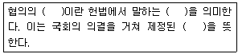
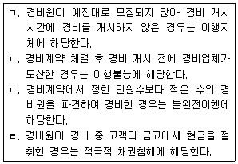
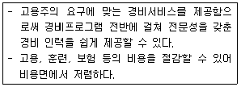
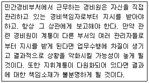

경비지도사-1차(법학개론,민간경비론) (2008-11-09 기출문제)
1과목: 법학개론
1. 법의 본질에 관한 설명으로 틀린 것은?
- 행위규범, 재판규범, 조직규범의 통일체이다.
- 근거가 정당하여야 한다.
- 존재의 법칙을 바탕으로 한다.
- 사회의 공통선을 목적으로 하는 사회규범이다.
(정답률: 37%)

2. 개인적(국민적) 공권에 해당하지 않는 것은?
- 자유권
- 참정권
- 독립권
- 수익권
(정답률: 53%)
3. 정의를 평균적 정의와 배분적 정의로 구분한 자는?
- 켈젠(Kelsen)
- 플라톤(Platon)
- 라드브루흐(Radbruch)
- 아리스토텔레스(Aristoteles)
(정답률: 53%)
4. 특별법에 관한 설명으로 틀린 것은?
- 군형법은 군인 및 군무원 등에게 적용된다는 점에서 형법의 특별법이다.
- 상법은 기업의 생활관계를 다룬다는 점에서 민법의 특별법이다.
- 국가보안법은 국가보안이라는 특수적 사항에 적용된다는 점에서 형법의 특별법이다.
- 헌법은 모든 국내법 중에서 최고규범이라는 점에서 민법의 특별법이다.
(정답률: 40%)
5. 법률의 적용과 관련하여 사실의 의제에 관한 설명으로 틀린 것은?
- 법률의 규정에 의하여 사실을 인정하는 것을 의미한다.
- 법문에서는 '간주한다' 또는 '본다'라고 표현한다.
- 반증을 통해 사실의 의제를 번복할 수 없다.
- 죄형법정주의를 취하고 있는 형법은 사실의 의제와 관련된 규정을 두지 않고 있다.
(정답률: 25%)
6. 법의 해석방법 중 논리해석에 해당하지 않는 것은?
- 문리해석
- 확장해석
- 물론해석
- 보정해석
(정답률: 43%)
7. 법과 종교의 관계에 관한 설명으로 틀린 것은?
- 법은 사회생활의 질서유지를 위한 규범이지만, 종교는 절대자에 귀의하기 위한 규범이다.
- 법은 의사중심의 내면성을 가지지만, 종교는 행위중심의 외면성을 가진다.
- 법은 국가에 의해 강제되지만, 종교는 초인격적인 신을 대상으로 한다.
- 법에는 신앙의 요소가 없지만, 종교에는 신앙의 요소가 있다.
(정답률: 48%)
8. 양도 또는 상속으로 타인에게 이전할 수 없는 권리는?
- 물권
- 인격권
- 저작권
- 손해배상청구권
(정답률: 53%)
9. 다음 중 ( )에 들어갈 말을 순서대로 바르게 묶은 것은?

- 법률-법률-성문법
- 법률-명령-성문법
- 명령-법률-불문법
- 법률-법률-불문법
(정답률: 43%)
10. 법원(法源)으로서 조례(條例)에 관한 설명으로 옳은 것은?
- 조례는 규칙의 하위규범이다.
- 국제법상의 기관들은 자체적으로 조례를 제정할 수 있다.
- 시의회가 법률의 위임 범위 안에서 제정한 규범은 조례에 해당한다.
- 재판의 근거로 사용된 조리(條理)는 조례가 될 수 있다.
(정답률: 42%)
11. 형법상 국가적 법익에 대한 죄가 아닌 것은?
- 위증죄
- 범인은닉죄
- 무고죄
- 통화위조죄
(정답률: 26%)
12. 형법상 형벌의 종류로 옳은 것은?
- 과태료
- 과징금
- 범칙금
- 과료
(정답률: 32%)
13. 법원이 직권으로 국선변호인을 선정하여야 하는 경우가 아닌 것은?
- 피고인이 미성년자인 때
- 피고인이 파산한 때
- 피고인이 농아자인 때
- 피고인이 심신장애의 의심이 있는 때
(정답률: 35%)
14. 타인의 범죄행위로 생명과 신체에 중대한 피해를 받은 자가 취할 수 있는 조치는?
- 국가를 상대로 손해배상을 청구할 수 있다.
- 검찰청에 범죄피해자구조를 청구할 수 있다.
- 헌법상 보장된 형사보상을 청구할 수 있다.
- 검찰청에 행정심판을 청구할 수 있다.
(정답률: 25%)
15. 형법상 책임이 조각되는 사유가 아닌 것은?
- 심신상실자의 행위
- 14세 미만자의 행위
- 피해자의 승낙에 의한 행위
- 강요된 행위
(정답률: 34%)
16. 형법상 반의사불벌죄가 아닌 것은?
- 폭행죄
- 존속협박죄
- 상해죄
- 명예훼손죄
(정답률: 20%)
17. 고소에 관한 설명으로 틀린 것은?
- 범죄를 인지한 제3자가 하여야 한다.
- 수사 개시의 원인이 된다.
- 원칙적으로 서면으로 하지만, 구두로 하여도 무방하다.
- 제1심 판결선고 전까지 취소할 수 있다.
(정답률: 56%)
18. 검찰의 소관 사항이 아닌 것은?
- 무혐의처분
- 약식기소
- 즉결심판의 청구
- 선도조건부 기소유예
(정답률: 42%)
19. 개인적 법익에 관한 죄 중 재산범죄에 해당하는 것은?
- 공갈죄
- 도박죄
- 뇌물죄
- 유가증권위조죄
(정답률: 24%)
20. 형사절차에 관한 설명으로 틀린 것은?
- 수사기관은 피의자가 출석요구에 응하지 않으면 체포영장을 청구할 수 있다.
- 수사기관은 피의자의 죄질이 무겁고 도주의 우려가 있는 경우 구속영장을 청구할 수 있다.
- 현행범은 누구든지 영장 없이 체포할 수 있다.
- 수사기관은 24시간 이내에 구속영장을 청구하지 않은 경우 피의자를 즉시 석방해야 한다.
(정답률: 50%)
21. 민법상 법인에 관한 설명으로 옳은 것은?
- 모든 사단법인과 재단법인에는 이사를 두어야 한다.
- 수인의 이사는 법인의 사무에 관하여 연대하여 법인을 대 표한다.
- 법인의 대표에 관하여는 대리에 관한 규정을 준용하지 않는다.
- 정관에 기재되지 아니한 이사의 대표권 제한은 유효하다.
(정답률: 25%)
22. 민법상 권리능력에 관한 설명으로 옳은 것은?
- 권리능력에 관한 규정은 임의규정이다.
- 설립등기는 법인의 성립요건이다.
- 실종선고는 실종자의 권리능력을 박탈하는 제도이다.
- 태아는 채무불이행에 기한 손해배상청구권을 갖는다.
(정답률: 27%)
23. 민법상 착오에 의한 법률행위의 취소에 관한 설명으로 틀린 것은?
- 표의자에게 고의 또는 중대한 과실이 없어야 한다.
- 법률행위의 내용의 중요부분에 착오가 있는 때에는 취소할 수 있다.
- 화해계약은 화해의 목적인 분쟁 이외의 사항에 착오가 있으면 취소할 수 없다.
- 표의자의 고의 또는 중대한 과실에 대한 입증책임은 상대방에게 있다.
(정답률: 23%)
24. 민법상 과실(果實)에 해당하지 않는 것은?
- 지상권의 지료
- 임대차에서의 차임
- 특허권의 사용료
- 젖소로부터 짜낸 우유
(정답률: 30%)
25. 민법상 경비계약의 위반에 관한 설명으로 옳은 것을 모두 고르면?

- ㄱ, ㄴ
- ㄱ, ㄴ, ㄷ
- ㄴ, ㄷ
- ㄴ, ㄷ, ㄹ
(정답률: 45%)
26. 민법상 경비계약에 관한 설명으로 옳은 것은?
- 경비계약은 위임계약의 일종이다.
- 경비업자는 계약상 채무를 자기재산과 동일한 주의로 이행하여야 한다.
- 고객은 경비계약상의 채무가 이행되지 않는 경우 강제이행을 청구할 수 없다.
- 경비원이 경비업무를 하면서 타인에게 손해를 가한 때에는 경비업자는 책임을 져야 한다.
(정답률: 39%)
27. A가 B를 상대로 대여금반환청구의 소를 서울지방법원에 제기한 뒤 이 소송의 계속 중 동일한 소를 부산지방법원에 제기한 경우 저촉되는 민사소송법상의 원리는?
- 변론주의
- 당사자주의
- 재소의 금지
- 중복제소의 금지
(정답률: 45%)
28. 민사소송에서 자백으로 간주할 수 있는 경우가 아닌 것은?
- 상대방이 주장하는 사실을 명백히 다투지 아니한 경우
- 상대방이 주장한 사실에 대하여 알지 못한다고 진술한 경우
- 한 쪽 당사자가 변론기일에 출석하지 아니한 경우
- 피고가 소장 부본을 송달받고 30일 이내에 답변서를 제출하지 아니한 경우
(정답률: 32%)
29. 부모 A, B를 모시고 있는 C는 D와 혼인하여 아들 E와 딸 F를 두었는데, 어느 날 교통사고로 C가 사망하였다. 그 후 A가 3억 5천만원의 재산을 남겨두고 사망한 경우, 상속인들에게 귀속되는 법정상속분으로 옳은 것은?
- B : 2억 1천만원
- D : 1억 4천만원
- E : 8천만원
- F : 6천만원
(정답률: 36%)
30. 민법상 상속 및 유언에 관한 설명으로 틀린 것은?
- 계자는 계모의 재산을 상속할 수 없다.
- 상속개시 전에는 특별한 사유가 있으면 상속을 포기할 수 있다.
- 자필증서, 녹음, 공정증서, 비밀증서, 구수증서에 의한 유언만 인정된다.
- 상속채무의 초과사실을 몰라서 단순승인이 된 경우, 중과실이 없는 상속인은 그 사실을 안 날로부터 3월 안에 한정승인을 할 수 있다.
(정답률: 35%)
31. 헌법상 헌법개정에 관한 설명으로 옳은 것은?
- 헌법개정은 국회 재적의원 과반수 또는 정부의 발의로 제안된다.
- 대통령의 임기연장 또는 중임변경에 관해서는 이를 개정할 수 없다.
- 헌법개정이 확정되면 대통령은 즉시 이를 공포하여야 한다.
- 헌법개정안에 대한 국회의결은 출석의원 3분의 2 이상의 찬성을 얻어야 한다.
(정답률: 29%)
32. 헌법상 재산권의 보장과 제한에 관한 설명으로 틀린 것은?
- 모든 국민의 재산권은 보장되나 그 내용과 한계는 헌법으로 정한다.
- 재산권의 행사는 공공복리에 적합하도록 하여야 한다.
- 공공필요에 의한 재산권의 수용ㆍ사용 또는 제한은 법률로 하여야 한다.
- 공공필요에 의한 재산권의 침해는 법률에 따른 정당한 보상을 지급하여야 한다.
(정답률: 35%)
33. 헌법상 신체의 자유에 관한 내용으로 틀린 것은?
- 영장제도
- 고문의 금지
- 변호인의 조력을 받을 권리
- 형사보상청구권
(정답률: 31%)
34. 헌법상 대통령의 권한으로 틀린 것은?
- 사면(赦免)권
- 공무원임면(任免)권
- 영전(榮典)수여권
- 부서(副署)권
(정답률: 39%)
35. 지방자치법상 지방자치단체의 종류로 틀린 것은?
- 제주특별자치도
- 서울특별시 광진구
- 수원시 팔달구
- 전라남도 장흥군
(정답률: 28%)
36. 행정심판법상 행정심판의 종류가 아닌 것은?
- 부작위위법확인심판
- 의무이행심판
- 무효등확인심판
- 취소심판
(정답률: 45%)
37. 근로기준법상 근로조건에 관한 설명으로 틀린 것은?
- 근로기준법에 규정된 근로조건은 최저기준이다.
- 사용자는 근로자가 근무시간 중에 선거권 행사를 위해 필요한 시간을 청구하면 이를 거부하거나 변경하지 못한다.
- 사용자는 근로계약불이행에 대한 위약금 또는 손해배상액을 예정하고 계약을 체결할 수 없다.
- 사용자가 근로자의 위탁으로 근로자의 저축을 관리하는 경우라도 저축의 종류ㆍ기간 및 금융기관은 근로자가 결정한다.
(정답률: 50%)
38. 국민연금법상 급여의 종류가 아닌 것은?
- 노령연금
- 사학연금
- 장애연금
- 유족연금
(정답률: 35%)
39. 상법상 주식회사의 자본에 관한 설명으로 틀린 것은?
- 회사가 보유하여야 할 책임재산의 최저한도를 의미한다.
- 발행주식의 액면총액을 말한다.
- 주주의 출자로서 구성된다.
- 1천만원 이상이어야 한다.
(정답률: 48%)
40. 상법상 피보험이익에 관한 설명으로 틀린 것은?
- 인보험계약의 본질적인 요소이다.
- 적법하고 금전으로 산정할 수 있는 이익이어야 한다.
- 보험계약의 동일성을 결정하는 기준이다.
- 피보험이익의 주체를 피보험자라 한다.
(정답률: 22%)
2과목: 민간경비론
41. 현대 민간경비의 의의에 대한 설명 중 틀린 것은?
- 민간경비 서비스는 일정한 비용을 지불하는 특정고객에 한해서 제공된다.
- 민간경비의 활동영역을 범주화하는데 있어서 자체경비(自體警備)는 제외시키는 것이 일반적이다.
- 민간경비와 공경비의 공통점은 범죄예방이다.
- 민간경비는 각 나라마다 차이가 있으며, 형식적인 민간경비와 실질적인 민간경비는 차이가 있다.
(정답률: 88%)
42. 민간경비와 공경비에 대한 설명 중 틀린 것은?
- 공경비란 주로 경찰의 활동을 말한다.
- 공경비의 경우 사법적 강제권을 행사할 수 있다.
- 민간경비업은 자연인이 아니면 이를 영위할 수 없다.
- 민간경비는 주로 특정 의뢰자를 대상으로 경호 및 경비서비스를 제공한다.
(정답률: 88%)
43. 민간경비원의 권한에 대한 설명 중 옳은 것은?
- 한국 경비업법상의 민간경비원은 경찰로부터 일정한 위임(경비업무의 자격 부여)을 받고 이루어지는 것이기 때문에 원칙적으로 일반시민보다 비교우위의 권한을 행사할 수 있다.
- 한국 민간경비원은 제한된 범위 내에서 경찰의 위임을 받아 수사권을 행사 할 수 있다.
- 일본의 민간경비원은 특별한 법적 권한이 주어져 있지 않다.
- 한국의 경우 경찰관이 민간경비업무를 본업으로 수행하는 것은 불가능하지만 부업으로 하는 것은 인정되고 있다.
(정답률: 82%)
44. 민간경비 성장의 이론적 배경으로 “민간경비가 한 사회에 있어 경찰이 수행하고 있는 경찰 본연의 기능이나 역할을 보완하거나 대체한다는 일반적 관점과 맥을 같이 하는 이론”은?
- 공동화이론
- 경제환원론
- 수익자부담이론
- 이익집단이론
(정답률: 91%)
45. 한국 민간경비의 발전과정에 대한 설명 중 틀린 것은?
- 1960년대부터 1970년대에는 청원경찰에 의한 국가 주요 기간산업체의 경비가 주류를 이루었다.
- 현대적 의미의 최초 민간경비는 1962년에 주한 미8군부대의 용역경비를 실시하면서부터 시행되었다.
- 민간경비산업은 1980년대 중반부터 본격적으로 발전하기 시작하였다.
- 2001년 경비업법의 개정으로 특수경비원제도가 도입되어, 청원경찰의 입지가 확대되었다.
(정답률: 73%)
46. 각국의 민간경비에 대한 설명 중 틀린 것은?
- 미국의 민간경비산업은 1, 2차 세계대전 이후 급속하게 발전하였다.
- 일본에는 교통유도경비제도가 있다.
- 영국은 산업혁명 때 민간경비와 공경비의 발전을 이루었다.
- 한국의 (용역)경비업법은 청원경찰법 이전에 제정되어 일찍부터 공경비인 경찰과 더불어 치안활동에 많은 기여를 해오고 있다.
(정답률: 78%)
47. 고대민간경비에 대한 설명 중 틀린 것은?
- 경비제도를 역사적으로 볼 때 공경비가 민간경비보다 앞서 있다.
- 개인의 생명과 재산을 보호하는 경비는 인류 역사상 가장 오래된 과제 중 하나이다.
- 대표적인 경비형태로 절벽에 위치한 동굴, 땅에서 사다리를 타고 나무에 올라가는 주거형태나 수상가옥 등이 있다.
- 고대문헌이나 성서와 같은 많은 자료에서 개인의 안전과 재산을 지키기 위해 야간감시자나 신변보호요원을 이용했음을 발견할 수 있다.
(정답률: 85%)
48. 영국 헨리필딩(Henry Fielding)이 시민들 중 지원자에 의한 소규모 단위의 범죄예방조직을 만들어 보수를 지급하고 1785년경 인류역사상 최초의 형사기동대에 해당하는 조직을 만든 시대는?
- 주야감시원 시대
- 보우가의 주자(Bow Street Runners) 시대
- 산업혁명 시대
- 헨리왕의 King's Peace 시대
(정답률: 85%)
49. 다음 설명 중 틀린 것은?
- 범죄예방이란 범죄를 미연에 방지하는 것으로 범죄가 발생하지 않도록 미리 그 원인을 제거하고 피해 확대를 방지하는 활동을 말한다.
- 최근 경찰은 지구대 도입을 통해 경찰의 인력 부족 문제를 해결하였다.
- 방범경찰은 광의로는 공공의 안녕과 질서유지, 범죄예방 등 모든 경찰활동을 생활안전이라는 개념에 포함시킬 수 있다.
- 방범리콜제도는 치안행정상 주민참여와 관련이 있다.
(정답률: 70%)
50. 다음 설명 중 틀린 것은?
- 환경설계를 통한 범죄예방(CPTED)이란 물리적 환경을 개선함으로써 범죄를 억제하고 주민의 불안감을 해소하는 제도이다.
- 고구려시대의 경비제도에는 대모달, 말객이 있다.
- 기계경비업 설립 시 자본금은 1억원 이상이다.
- 경비의 3대 요소는 방범, 방수, 방화이다.
(정답률: 72%)
51. 경비요소 조사에 대한 설명 중 틀린 것은?
- 내부적 담당자에 의한 조사는 조직 내 타부서와 경비부서의 협조체제가 용이하다.
- 경비전문가에 의한 조사는 현 상태에 대한 더욱 정확한 평가가 가능하다.
- 경비요소 조사는 경비책임자가 우선적으로 고려해야 할 사항이다.
- 내부적 담당자에 의한 조사는 평가기준이 더욱 객관적이다.
(정답률: 70%)
52. A. J. Bilek이 제시한 민간경비원의 일반적 지위에 포함되지 않는 것은?
- 경찰관 신분의 경비원
- 군인 신분의 경비원
- 민간인 신분의 경비원
- 특별한 권한을 보유한 경비원
(정답률: 82%)
53. 우리나라의 경찰관과 민간경비원에 대한 비교 설명 중 틀린 것은?
- 경찰관은 법적으로 범죄자를 체포할 권한이 있다.
- 민간경비원은 원칙적으로 현행범을 제외하고는 범죄자에 대한 체포 권한이 없다.
- 경찰관의 경비활동으로 인한 손해에 대해서는 손실보상이나 손해배상을 하여야 한다.
- 경비업자는 경비원이 고의로 경비대상 등에 손해를 입힌 경우에만 그 손해를 배상한다.
(정답률: 96%)
54. 경비실시 과정 중 우선적으로 수행되어야 하는 것은?
- 경비진단
- 경비계획수립
- 경비실시
- 경비평가
(정답률: 77%)
55. 다음 내용이 설명하고 있는 것은?

- 회사경비서비스
- 자체경비서비스
- 계약경비서비스
- 상주경비서비스
(정답률: 90%)
56. 경비조직화를 하는 경우 통솔범위의 결정요인에 대한 설명 중 틀린 것은?
- 신설조직 책임자가 기존조직 책임자 보다 통솔범위가 넓다.
- 여러 장소에 근무하는 사람들을 통솔하는 책임자는 한 곳에 근무하는 사람들을 통솔하는 책임자 보다 통솔범위가 좁다.
- 계층의 수가 적을수록 상관의 통솔범위가 넓다.
- 부하의 자질이 높을수록 상관의 통솔범위가 넓다.
(정답률: 75%)
57. 경비계획의 기본원칙에 대한 설명 중 틀린 것은?
- 건물 외부의 틈으로 접근 및 탈출 가능한 지점 및 경계구역(천장, 공기환풍기, 하수도관, 맨홀 등)은 보호되어야 한다.
- 효과적인 경비를 위해서는 안전경비조명이 설치되어야 하고 물건을 선적하거나 수령하는 지역은 분리되어야 한다.
- 잠금장치는 정교하고 파손이 어렵게 만들어져야 하고 열쇠를 분실할 경우에 대한 적절한 조치를 취해야 한다.
- 경비원 대기실은 시설물 출입구와 비상구에서 가급적이면 멀리 떨어져 있어야 한다.
(정답률: 95%)
58. 민간경비의 조직운영원리와 관련하여 다음에 해당하는 것은?

- 전문화의 원리
- 계층제의 원리
- 명령통일의 원리
- 통솔범위의 원리
(정답률: 52%)
59. 자체경비와 계약경비에 대한 설명 중 옳은 것은?
- 자체경비는 계약경비에 비해 인사관리 차원에서 효율적이다.
- 자체경비는 사용자를 의식하지 않고 소신 있게 경비업무를 수행할 수 있다.
- 계약경비는 자체경비에 비해 직업적 안정성이 떨어지기 때문에 이직률이 높다.
- 계약경비원들은 자체경비원들 보다 높은 충성심을 갖는다.
(정답률: 70%)
60. 주거시설 경비에 대한 설명 중 틀린 것은?
- 최근에는 방범, 구급안전, 화재 등으로부터 보호하기 위한 주택용 방범기기의 수요가 급속히 증가하고 있다.
- 주거시설 경비는 점차 기계경비에서 인력경비로 변화하고 있다.
- 주거침입의 예방대책은 건축 초기부터 설계되어야 한다.
- 타운경비는 일반단독주택이나 개별빌딩 단위가 아닌 대규모 지역단위의 방범활동이다.
(정답률: 91%)
61. 화재발생 단계 중 적외선 감지기가 유용한 단계는?
- 불꽃발화단계
- 열단계
- 초기단계
- 그을린단계
(정답률: 64%)
62. 백열등과 마찬가지로 매우 밝은 하얀 빛을 발하며, 빨리 빛을 발산하고, 매우 높은 빛을 내기 때문에 경계구역과 사고발생 지역에 사용하기에 매우 유용하지만, 가격이 비싸다는 단점을 갖고 있는 조명은?
- 가스방전등
- 석영등
- 투광조명등
- 프레이넬등
(정답률: 67%)
63. 시설물의 외곽경비에 대한 설명 중 틀린 것은?
- 외곽경비의 제1차적인 경계지역은 건물 주변이다.
- 강, 절벽 등 자연적인 장벽만으로는 외부침입을 방지하는데 문제점이 있는 경우, 인위적인 구조물을 설치하여야 한다.
- 울타리 중 철조망은 내부에서 외부침입자를 쉽게 적발할 수 있으나, 설치비용이 많이 든다.
- 담장은 외부에서 내부 관찰이 불가능하도록 하기 위해 주로 사용된다.
(정답률: 77%)
64. 경비실시의 형태 중 포괄적이고 전체적인 계획이 없이, 필요할 때마다 손실 및 예방 등의 역할을 수행하기 위해 추가되는 경비형태는?
- 단편적 경비
- 1차원적 경비
- 반응적 경비
- 총체적 경비
(정답률: 62%)
65. 외벽, 자물쇠, 쇠창살 등의 주요 목적은?
- 침입의 완벽한 방지
- 침입시간의 지연
- 침입의 보고
- 화재 방지
(정답률: 74%)
66. 금융시설의 안전관리대책에 대한 설명 중 틀린 것은?
- 금융시설에서 사건이 발생할 경우를 대비하여 신속한 대응을 위한 사전 모의훈련이 필요하다.
- 금융시설의 위험요소는 외부인에 의한 침입뿐만 아니라 내부인에 의한 범죄까지 포함된다.
- 모든 CD ATM에는 경비원을 배치해야 한다.
- 현금 호송시에는 가급적 전용차를 사용하고, 운전자 외에 가스총 등을 휴대한 경비원을 동승시킨다.
(정답률: 67%)
67. 판매시설에 있어 손님을 유인하는 효과와 절도를 방지하는 이중적 효과를 갖는 방어대책은?
- 경고표지
- 상품전시
- 거울
- 감시
(정답률: 84%)
68. 원거리에서 문을 열고 닫도록 제어하는 장점이 있으며, 특히 마당이 있는 가정집 내부에서 스위치를 누름으로써 외부의 문이 열리도록 작동하는 보안잠금장치는?
- 광전자식잠금장치
- 일체식잠금장치
- 전기식잠금장치
- 기억식잠금장치
(정답률: 69%)
69. 열쇠의 홈이 한 쪽 면에만 있으며, 홈에 알맞은 열쇠를 꽂지 않으면 자물쇠가 열리지 않는 것은?
- 돌기자물쇠(Warded Locks)
- 판날름쇠자물쇠(Disc Tumbler Locks)
- 핀날름쇠자물쇠(Pin Tumbler Locks)
- 숫자맞춤식자물쇠(Combination Locks)
(정답률: 68%)
70. 혼잡경비의 대상에 해당하는 것은?
- 각종 스포츠 경기
- 현금운송
- 국가중요시설
- 중요인사의 경호
(정답률: 74%)
71. 컴퓨터범죄의「범행상」특성 중 틀린 것은?
- 범행의 연속성
- 범행의 광역성
- 죄의식의 희박성
- 범행증명의 용이성
(정답률: 89%)
72. 컴퓨터 시스템의 안전대책에 관한 설명 중 틀린 것은?
- 컴퓨터실은 허가받은 자만이 출입하도록 엄격히 통제하여야 한다.
- 컴퓨터실의 위치선정시 화재, 홍수, 폭발의 위험과 외부침입자에 의한 위험으로부터 안정성을 고려해야 한다.
- 오퍼레이팅 시스템과 업무처리 프로그램은 반드시 복제 프로그램을 작성해 두어야 한다.
- 외부 장소에 보관한 백업용 기록문서화의 종류는 최대한 많은 것이 좋다.
(정답률: 88%)
73. 불의의 사고로 인하여 컴퓨터 시스템이 파괴되거나 손상될 것에 대비하여 실시되는 안전대책은?
- 시스템 백업
- 방화벽
- 침입차단 시스템
- 시스템 복구
(정답률: 81%)
74. 컴퓨터 시스템 안전대책 중「관리적 대책」이 아닌 것은?
- 패스워드의 철저한 관리
- 직무권한의 명확화
- 프로그램 개발통제
- 데이터의 암호화
(정답률: 62%)
75. 컴퓨터범죄 중 은행시스템에서 이자계산시 떼어버리는 단수를 1개의 계좌에 자동적으로 입금 되도록 프로그램을 조작하는 수법은?
- 부분잠식수법
- 운영자 가장수법
- 자료의 부정변개
- 시험가동ㆍ모델로 위장수법
(정답률: 64%)
76. 컴퓨터를 운영하기 위해 필요한 운영프로그램이 저장되어 있는 자료들을 불이나 물 그리고 물리적 공격, 자석 등을 이용하여 지워버리거나 작동하지 못하게 하는 행위는?
- 하드웨어 파괴
- 소프트웨어 파괴
- 전자기 폭탄
- 사이버 갱
(정답률: 56%)
77. 한국 민간경비산업에 대한 설명 중 옳은 것은?
- 2000년 이후 기계경비가 인력경비의 시장규모를 넘어서고 있다.
- 민간경비업의 설립에 대한 허가제가 신고제로 바뀌어 경비업체의 질적 저하를 초래하고 있다.
- 경찰업무의 민영화가 빠르게 진전되어 경찰의 위기의식이 고조되고 있다.
- 민간경비의 수요 및 시장규모는 전국에 걸쳐 보편화 되었다기보다는 아직까지 특정지역에 편중되어 있다.
(정답률: 91%)
78. 민간경비제도의 단일화 방안이 제기되는 이유로 틀린 것은?
- 외국 경비업체의 국내 진출로 인한 갈등
- 지휘체계 이원화에서 파생되는 갈등
- 신분차이에서 오는 갈등
- 보수의 차이에서 오는 갈등
(정답률: 86%)
79. 우리나라의 민간경비와 경찰의 상호협력ㆍ관계개선 방안으로 틀린 것은?
- 경찰조직 내에 일정규모 이상의 민간경비 전담부서 설치
- 민간경비업체와 경찰책임자와의 정기적인 회의 개최
- 민간경비원의 복장을 경찰과 유사하게 하여 치안활동의 가시성을 높이도록 하는 방안
- 경찰과 민간경비원의 합동순찰제도
(정답률: 87%)
80. 한국 민간경비산업의 문제점으로 틀린 것은?
- 경비입찰단가의 비현실성
- 전문인력의 부족
- 총기사용의 제한
- 경비업체의 영세성
(정답률: 73%)